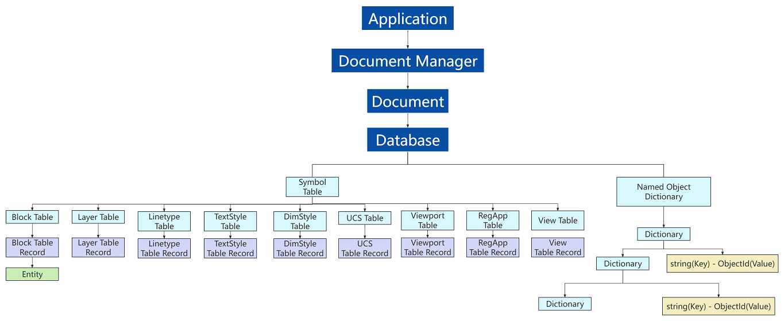

To efficiently develop .NET secondary applications for ZWCAD, you should familiarize yourself with the ZWCAD .NET entities, objects, and functionalities relevant to your application. Below is a comprehensive explanation of the ZWCAD .NET interface class hierarchy, covering core modules such as Application, Document, Database, and Interaction:
Application
Most ZWCAD .NET interfaces are rooted in the Application object, which represents the entire ZWCAD application instance. Through the ZwSoft.ZwCAD.ApplicationServices.Application class, developers can globally control application behaviors, including:
1. Document Management: Access all open drawing files (Document object collections) via DocumentManager and retrieve the current active document (ActiveDocument).
2. System Services: Access system variables, registry settings, user interfaces (e.g., command line, status bar), and global events (e.g., document open/close events).
Document
Each open drawing file is represented by a Document object under the ZwSoft.ZwCAD.ApplicationServices.Document namespace. Core functionalities include:
1. Graphics Database Access: Obtain the underlying database object via the Document.Database property. All graphical data (e.g., entities, layers, blocks) are stored here.
2. Transaction Management: Use Document.TransactionManager to initiate transactions (Transaction), ensuring atomicity and rollback capabilities for database operations (add, delete, modify).
Database Layer
The Database object (ZwSoft.ZwCAD.DatabaseServices.Database) is the core container for ZWCAD graphical data. Its structure includes:
1. Symbol Tables, such as Block Table, Layer Table, etc.
2. Graphical Entities, such as Line, Circle, Polyline, Text, BlockReference, etc. These provide geometric creation and editing methods (e.g., TransformBy for coordinate transformations) and are stored in BlockTableRecords.
3. Dictionaries: Store custom data (e.g., user-defined configurations) and support key-value pair persistence.
User Interaction (Editor)
The Editor class (ZwSoft.ZwCAD.EditorServices.Editor) enables dynamic interaction with users. Core functionalities include:
1. Input and Selection: Use methods like GetPoint(), GetKeyword() to capture user inputs (coordinates or keywords), and SelectAll(), SelectFence() for entity selection. Handle selection sets via PromptSelectionResult.
2. Command Execution: Execute built-in or custom ZWCAD commands directly using ExecuteCommand().
3. Message Feedback: Output prompt messages to the command line via WriteMessage().
Hierarchy Diagram
These objects are organized hierarchically, with the ZWCAD Application object at the root. This hierarchy is commonly referred to as the Object Model. The diagram below illustrates the basic relationship between the Application object and entities in BlockTableRecords (e.g., Model Space). Additional objects in the ZWCAD .NET interfaces are not shown here.
